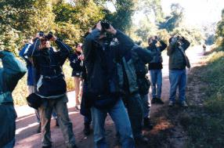
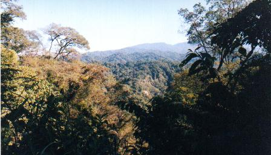
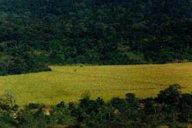
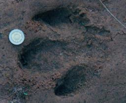

Domingo 22 de Julio de 2000 a las 9:45 Ya estabamos preparados para la primera salida, con los binoculares al cuello. Una miradita por el campamento indicaba que los demás integrantes listos para zarpar eran, sin lugar a dudas, verdaderos ornitófilos. Cada uno iba ataviado con su inseparable y particular parafernalia que lo acompaña desde hace años en sus salidas: gorro ornitológico, chaleco ornitológico, mochila ornitológica... Así, al oír la orden de partida de nuestro líder, comenzamos la marcha. Haríamos el corto trayecto hacia el estacionamiento, y de allí ascenderíamos por el camino hasta llegar al "Mirador", a unos 100 m más arriba. El zigzagueante camino de tierra atraviesa todo el parque en dirección general hacia el oeste, y constituye prácticamente la única vía razonable de desplazamiento, dado el escarpado relieve y la densa vegetación. Por suerte, la mayor parte de este inmenso Parque Nacional es prácticamente inaccesible, lo cual ayuda a preservar la fauna. El camino asciende por las húmedas laderas orientales de estas Sierras Subandinas, pasando por un puesto de Guardaparques en "Mesada de las Colmenas" (km. 13 a 1.150m) y abandona el Parque a gran altura, en un paraje conocido como "Monolito" o "Abra de Cañas" (km. 23 a 1.700m). Nuestra intención era llegar a recorrer la totalidad del camino en estos cuatro días, hasta la altura máxima. El objeto de la caminata era identificar aves. A lo largo del camino estaríamos atentos a reconocer las diversas especies que el azar y la suerte nos regalarían. Desde luego habría muchas aves que serían comunes, pero siempre había que estar atento a las variedades infrecuentes, porque sería posiblemente la única oportunidad que tendríamos para verlas. Debido a la enorme diversidad de especies, y siendo que algunas de ellas son muy parecidas entre sí, los especialistas no pasaban por alto un solo pajarito: cada ser alado era examinado minuciosamente, por las dudas se trate de una especie "rara". En algunos casos la identificación correcta requiere de gran conocimiento y agudeza visual, al haber especies muy parecidas entre sí. Entonces se recurría a comparar sutiles rasgos diferenciales. La posibilidad de aplicar en el campo tal refinado nivel de conocimiento le aportaba a los especialistas la mayor satisfacción. Y en algunos casos, cuando aparecía una duda, provocaban interesantes discusiones tendientes a consensuar los criterios. Para Nicolás y para mí, todo esto formaba parte de un deleitoso "curso al aire libre".  Por suerte habíamos optado por no llevar las camperas, ya que pronto comenzó a templar, y un poco más tarde llegaría a hacer un calor apreciable. Durante un par de horas anduvimos a paso lento por el camino de tierra, con frecuentes paradas para observar aves, y también para disfrutar hermosas vistas de la selva. A veces la vegetación comenzaba al mismo nivel del camino, a veces en la cima de altas paredes de roca, y otras veces se zambullía hacia abajo, deslizándose por precipicios y empinadas laderas. Esta fuerte variación del relieve permitía observar la selva tanto desde abajo como desde arriba. Como muchas aves ocupan determinados estratos de la vegetación, (por ejemplo algunas viven en la copa de los arboles, y otras recorren por el suelo), el camino servía entonces como andamiaje de características ideales, ya que, con total comodidad, nos permitía observar en forma simultánea el dosel y el sotobosque.En algunas curvas mágicas se presentaban fabulosos panoramas, bellísimos paisajes aéreos de la selva de montaña. Se divisaban loma tras loma de vegetación tupida y verde que, por efecto de la distancia, viraba imperceptiblemente hacia tonos más azulados y grisáceos - pero siempre impresa por la inconfundible textura de la arboleda. Algunas lomas se extendían hacia arriba, constituyendo verdaderas montañas ¡Qué espléndido!  Típico paisaje desde el camino Y sin embargo, ¡cuánto mejor sería este paisaje si por ese gigantesco espacio alfombrado de selva, y demarcado por cerros igualmente verdes, pudiésemos observar el majestuoso vuelo de un ave rapaz! Me refiero desde luego a las hermosas e infrecuentes rapaces selváticas. Aquí, tal como ocurre hoy en todas las selvas del mundo, esas grandes aves son una rareza extrema. Pero durante estos cuatro días contábamos con la probabilidad cierta de ver tal vez un individuo, tal vez dos. ¡Que aparezcan de una buena vez! Durante la caminata la atención de los observadores se focalizaba en las ramas de los arboles y enredaderas que flanqueaban el camino, atentos a cualquier movimiento sutil que pudiese delatar la presencia de un pequeño pajarito. Este era ciertamente el frente de observación más productivo. Pero había otro frente no menos importante: el de las magníficas rapaces, que generalmente se observan en vuelo alto. El grupo tenía que dejar recursos disponibles que permitiera detectar su sigiloso paso por los cielos, y sin perjudicar la observación de las aves arbóreas. El monitoreo sería un permanente trabajo de equipo que debía transcurrir en forma totalmente automatizada. Fui testigo, y protagonista a la vez, del operativo que surgió espontáneamente en el grupo para llevar a cabo dicha detección. Tal es así, que me atrevo a describir ahora este elaborado mecanismo. Sin saberlo, cada uno de los observadores habíamos puesto en marcha un cronómetro biológico interno, activado por el inconsciente, que contaba el tiempo por medio de alguna misteriosa y desconocida onda cerebral. Esta suerte de "despertador natural" se activaría repetidamente según el intervalo fijado por cada observador. De esta manera, cuando funcionábamos como grupo, el azar determinaba la casi permanente atención de al menos uno de sus miembros. En forma aparentemente aleatoria y asincrónica, los observadores éramos "llamados" a cumplir el mandato. El cronómetro tenía la virtud de despertarnos de cualquier actividad en curso, sea ésta la que fuere, para avisarnos que había llegado el momento de echar un rápido vistazo al "más arriba", en lo alto del cielo: era hora de "escanear" el firmamento para detectar (o descartar) la presencia de alguna posible rapaz. La siempre elusiva rapaz... Lo notable es que no existía distracción física ni mental alguna capaz de demorar o interferir con su funcionamiento. Tan fuerte era su llamado que hasta era capaz de interrumpir una observación interesante. Y el sistema nunca cesaba de operar: terminada la caminata seguía funcionando y, como se verá, no se detenía ni siquiera cuando comíamos. Solo se apagaba de noche. Se podrá deducir que, fijando un intervalo de tiempo más bien corto entre cada "miradita", el observador obtenía como beneficio una mayor probabilidad de encontrar una rapaz en vuelo, pero seguramente arriesgaba perder el avistaje de un hermoso picaflor o descubrir el movimiento sigiloso de un Tingazú entre las ramas. Confieso que, a la larga, las tan repetidas miradas al cielo producían todo tipo de estiramientos musculares del cuello, calambre de nuca y desgaste de las articulaciones cervicales. ¡Creo que esto da una idea de la cantidad de veces que algunos de nosotros miramos hacia arriba! Sospecho que los observadores que utilizaban los intervalos más cortos eran los que, secretamente, se desvivían por ser ellos quienes pasarían a la historia por dar el aviso al resto del grupo, emitiendo magnánimamente esa mágica voz de alerta: ¡¡¡¡RAPAZ!!!! De esta manera el grupo avanzaba por el camino. Cada pocos segundos uno cualquiera de los integrantes echaba un rápido vistazo en lo alto, contra las colinas distantes, y también hacia atrás, con la esperanza de ver una manchita oscura en vuelo. No se necesitaba un "coordinador", ya que la "conciencia grupal" garantizaba que siempre había alguien ocupándose. El grupo funcionaba entonces como una sistema de radares de tráfico aéreo con turnos rotativos en estado de alerta. Estas expresiones - posiblemente algo magnificadas - que estoy utilizando para describir el accionar del grupo es indicativo de las "ganas" que había para ver algún águila. Tal vez sorprenda que nuestra supuestamente apacible y somnolienta actividad de observar aves incorpore esta conducta algo ansiosa y obsesiva, pero es sólo el reflejo de una situación muy seria: la muy baja densidad de las poblaciones de rapaces, causada por la caza, el desmonte y otras actividades humanas, significaba que las probabilidades de éxito durante nuestra corta estadía eran tremendamente bajas. Tan escasos son estos avistajes, que la mayoría de los integrantes del grupo - incluso algunos que ya tenían en su haber varias visitas a Calilegua - nunca habían logrado observar las especies de mayor porte. Por eso, si deseábamos coronar nuestra estadía con al menos un avistaje interesante, había que advertir la presencia - e identificar - toda rapaz que ingresaba en nuestro espacio aéreo. No podíamos permitir que la gloria se deslice secretamente a nuestras espaldas. Por su puesto, casi todas las veces el esfuerzo de observar al cielo fue en vano. Pero en algunas oportunidades había algo volando... Entonces la situación cambiaba rotundamente. Será curioso, pero para el observador que ha sido bendecido con la afortunada oportunidad de ser quien detecta primero la presencia de una silueta en vuelo siente, durante los primeros instantes de la observación, que en realidad tiene un castigo de Dios. Es que ahora debe discernir si corresponde o no hacer el glorioso anuncio. Debe estar seguro de no emitir una falsa alarma, porque algunas rapaces son muy comunes, y podemos visualizarlas en todo el país. Si se apura, distrayendo al resto innecesariamente, podría pasar tremenda vergüenza entre sus congéneres. No vaya a ser que grite lobo cuando en realidad se trataba de una palomita... Arriesga la perdida de credibilidad, pero sin embargo, el castigo por advertir tarde el hallazgo de una buena presa puede ser aún mayor. El tiempo es oro, y la silueta se aleja. Parece grande... "¡¡¡AGUILA...!!!" El mundo se detiene. Todos dejan caer lo que sea que estaban haciendo. El pajarito raro que veíamos en nuestro binocular no importa ya. Tendrá que esperar, porque ahora manda un bicho grande. De inmediato los radares del grupo pasan a comportarse como una batería de cañones antiaéreos. Desde su lugar, sin demora y casi al unísono, cada observador gira su cuerpo y apunta a la silueta en vuelo. Dada la celeridad y precisión de la maniobra, parecería que todos conocen de antemano la exacta posición del ave, supuestamente difundida al grupo por medio de la comunicación extrasensorial. Momento seguido, algunos de los observadores ya están viendo de nuevo el pajarito en la rama. No era un aguila, sino una falsa alarma: una especie común. Tal vez un jote o incluso un carancho, y que no merecen medio segundo más de atención. Otros, los que aún no saben lo que están viendo, comienzan a balbucear su descripción del animal. "Alas largas, cola desplegada, no veo que sea barrada..." Piensan que el resto del grupo los escucha atentamente. Pero, al no oír eco, al fin bajan el binocular y preguntan: "Che, ¿Qué fue?" La mayoría de las veces que oímos el anuncio la rapaz resultó ser una especie común. Algunas pocas veces estuvimos ante la presencia de algo bien interesante: un Jote Real o un Cóndor por ejemplo. Pero en dos oportunidades estuvimos ante especies que pueden considerarse entre las rarezas máximas, que hoy solamente puede brindar un area protegida como Calilegua. La caminata en ascenso ya nos había llevado hasta el Mirador. Entre la muy numerosa lista de especies observadas puedo mencionar: un Surucuá, un Batará Gigante (hembra), un Rey del Bosque, una lechucita Caburé, una bandada de los grandes loros "Maracaná Cuello Dorado", el Frutero Yungueño, varias especies de arañeros y diversos tiránidos de difícil identificación para los novatos. Desde lo alto del mirador observamos el valle del San Lorenzo, ya totalmente inmerso en luz solar. Del otro lado del río se divisaba el silencioso pero temible testimonio de la destrucción de la selva: una gran planicie cultivada con caña de azúcar. Aquí se había reemplazado la magnífica diversidad de la flora y fauna selvática, por una "monoespecie", un campo poblado por miles de idénticas plantas de caña. Es cierto que las más de 76.000 ha. que conforman del P. N. Calilegua fueron donadas al estado, en 1979 por los dueños del ingenio Ledesma. Pero algunos opinan que con esa donación desinteresada la empresa conseguía un beneficio vital: al quedar garantizada la preservación de la flora de Calilegua, es decir, sus selvas, se asegura una provisión regular de agua para riego durante todas las estaciones del año. En caso contrario, si el bosque fuese talado, desaparecería el efecto "esponja", y el agua de las precipitaciones se escurriría rápidamente por los ríos. Los valles, hoy verdes, quedarían reducidos a lucir un cauce sin agua durante la temporada seca. Sería imposible el riego. No habría más cultivos de caña, ni azúcar, ni ingenio. Me enteré que, llegado el momento de la cosecha, las prácticas actuales de economía requieren la quema de todo el campo. Así desaparece la hojarrasca, casi sin causar daños al jugoso tallo, lo que facilita mucho la posterior tarea de la cosecha. Este sistema reduce los costos y no perjudica sustancialmente el rendimiento azucarero. Pero... ¿Hay animales que encuentran refugio o nidifican en estas plantaciones? ¿Si los hay, se hará la quema fuera de la temporada de nidificación? ¿Y qué pasaría con la selva circundante si el fuego se descontrolara?  Plantaciones de caña de azucar vistas desde el mirador Sin respuestas, descendimos de vuelta al campamento por el camino surcado de selva. Exhaustos. Facundo nos había preparado un delicioso almuerzo, salchichas con arroz, que disfrutamos en nuestro flamante comedor al aire libre. Luego descansamos. Pero el tiempo de descanso no fue suficiente: pronto sería hora de salir nuevamente, a las 3 de la tarde, para la segunda caminata. En este caso efectuamos el mismo recorrido en ascenso hasta el Mirador, y unas pocas cuadras más adelante nos desviamos del camino, tomando una senda a la derecha. Se trataba del sendero "Lagunita", que nos llevaría hasta el valle del arroyo Aguas Negras, pasando por una laguna. El sendero era encantador, porque nos internábamos dentro de la selva propiamente dicha. Ibamos a la sombra de arboles y todo tipo de enredaderas, protegidos del fuerte sol. Al comenzar el sendero pensaba que aquí veríamos muchas más aves. Creía que, por timidez o desconfianza, muchas especies se mantendrían siempre alejadas de la transitada ruta, y que las sorprenderíamos escondidas en el monte. Pero contrariamente a mis predicciones, no vimos un solo pájaro, o tal vez solamente el más común de los zorzales. Pasamos la laguna, y llegamos al arroyo, donde el profundo valle abre nuevamente la selva. Aquí me comunicaron que se habían divisado dos pequeños halcones, que pude observar en lo alto de un árbol seco. Otra nueva especie para marcar: Halcón Negro Chico. La vuelta al campamento se efectuó siguiendo el cauce del arroyo. Tuve oportunidad de observar un hermoso Picaflor Andino, Viuditas de Río, y un diminuto carpinterito. Pero lo que más me asombró fue la cantidad y variedad de pisadas de mamíferos marcadas en los barreales rojizos y playas de arena fina que bordeaban el agua. Algunas eran casi tan grandes como mi mano extendida: huellas de Tapir, o Anta como se conoce en Jujuy. Así pues, me convencí que en esas selvas, aparentemente desiertas, vive salvaje este magnífico mamífero. Otras huellas más pequeñas serían de zorros, lobitos de río, pecaríes, el pequeño ciervo o "corzuela", y muchas que pertenecían a felinos de distintos tamaños. Esas huellas eran los únicos testimonios que vimos de una gran variedad de mamíferos que habita la zona.  Pisada de Tapir - nótese la moneda de $1 como referencia de tamaño Las huellas me hicieron recordar algún libro ilustrado de mi juventud, seguramente "importado", con las clásicas actividades que se propone a los campamentistas norteamericanos. Entre ellas, instrucciones de cómo utilizar yeso para tomar las impresiones de huellas de osos, lobos y alces. Salvo alguna excepción, las únicas huellas de mamíferos que había visto eran de animales domésticos y de granja, nada tan interesante como las que proponía este libro, así que nunca tuve motivación para hacer moldes. Pero ahora... este lugar... ¡Era un paraíso de huellas! En algunas partes la densidad era tan grande que se asemejaba a un corral utilizado por ganado. La única razón por la que no podíamos maravillarnos aún más ante esa diversidad y abundancia era porque faltaba material de consulta: una guía de identificación de las pisadas de mamíferos autóctonos. Nos hubiera permitido dejar atrás las conjeturas y confirmar científicamente la presencia de tantas especies maravillosas. ¡Lástima que aún no existe una guía semejante! Cuando llegamos de vuelta al campamento ya estaba oscuro, y otra vez estábamos agotados. La cena preparada por Facundo: deliciosos fideos con tuco. Al calor del fogón tuvimos todos la oportunidad de presentarnos "en sociedad". Luego, Nico y yo nos fuimos a la carpa, resignados a pasar la primera noche en el tambor de carga horizontal. * * * |